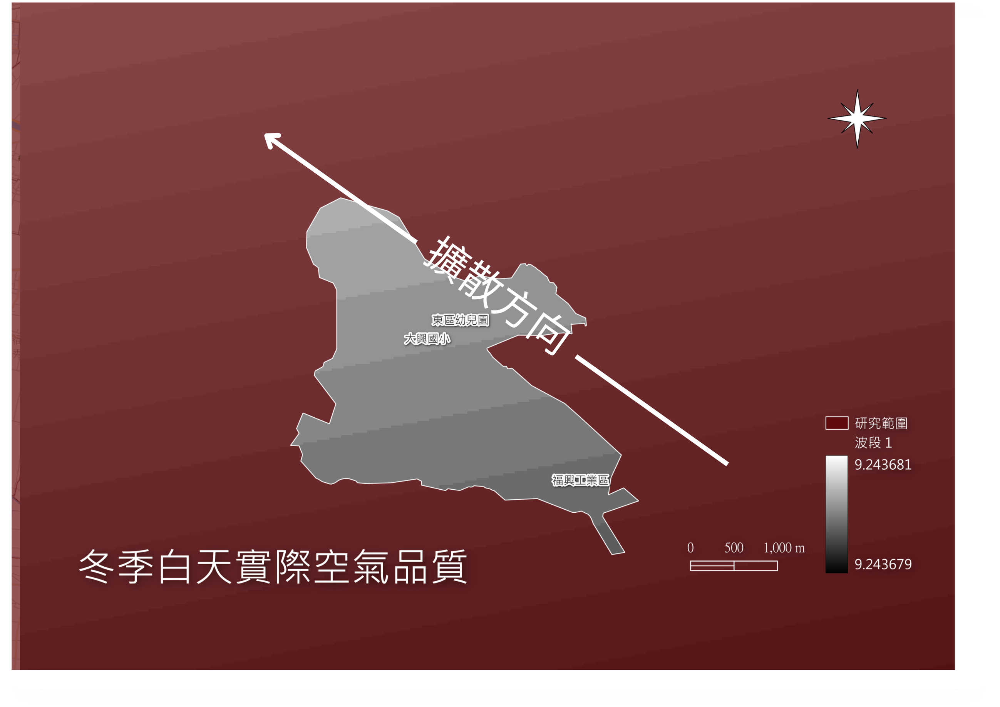

研究範圍選定
彰化縣福興鄉
本次範圍選定在彰化縣福興鄉的外埔、元中、外中、三汴、萬豐村，總面積約 803 公頃 [cite: 1]。
空間衝突
範圍內皆非都市計畫地區，並劃設有福興工業區 [cite: 1]。
區域內工廠點位與農地、住宅建物高度混雜，空間使用衝突顯著 [cite: 1]。

夏季白天分析
理論擴散範圍 (QGIS 扇形緩衝區)
以工廠為中心，根據盛行之西南季風風向，設定擴散角度與影響半徑(約2,000公尺) [cite: 1]。
實際空氣品質 (IDW 內插網格)
將離散的感測點位數值轉換為連續性網格，真實呈現濃度空間分佈 [cite: 1]。
➔ 請拖曳右方滑桿疊加比對
實際網格 (Raster)
預期擴散 (Wedge Buffer)


夏季晚上分析
基準時間：2025/7/1 8:00 pm [cite: 1]。
同樣利用 QGIS 反距離加權法 (IDW) 與 扇形緩衝區 (Wedge Buffer) 進行對比 [cite: 1]。
➔ 請拖曳右方滑桿疊加比對
實際網格
預期擴散


冬季白天分析
基準時間：2026/1/1 8:00 am [cite: 1]。
呈現研究區域內真實的濃度空間分佈趨勢，並以灰階色階標註濃度變化 [cite: 1]。
➔ 請拖曳右方滑桿疊加比對
實際網格
預期擴散


冬季晚上分析
基準時間：2026/1/1 8:00 pm [cite: 1]。
對比理論擴散方向與實際觀測點位的空間分布差異 [cite: 1]。
➔ 請拖曳右方滑桿疊加比對
實際網格
預期擴散